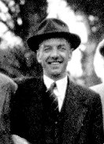
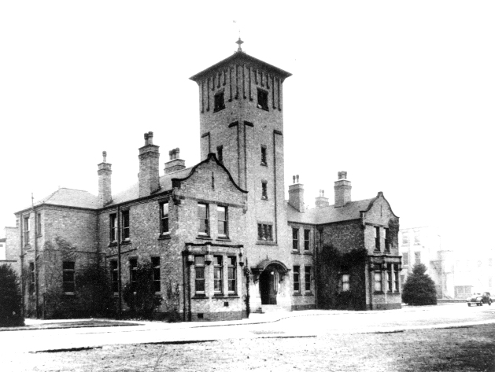
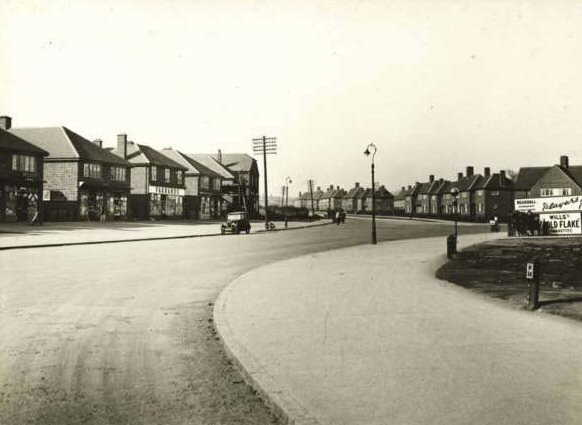
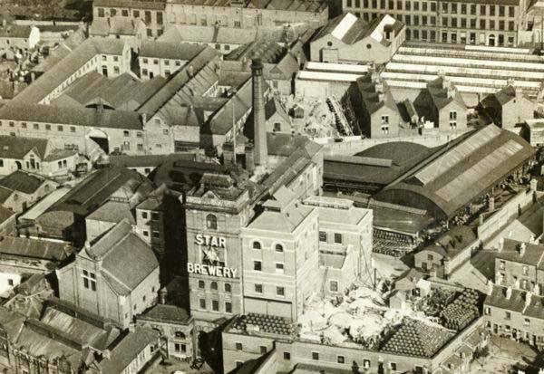
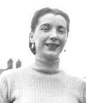
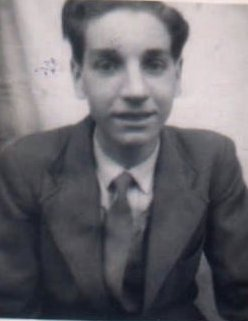
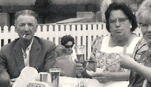

George Noble, 1904 - 1972

George Noble was born in Bagthorpe Workhouse, Nottingham, on March 28 1904. He was the second son of Thomas and Mary Ann Noble (nee Keetley) . George's father, Thomas Noble, was described as a Cotton Presser and at the time of his christening their address is given as 9 Harvey Terrace. The family were extremely poor and during the first few years of George's life he, his brother William and mother Mary Ann were frequently admitted to the workhouse. No mention is made of father Thomas however until March 1908 when he discharges George and William from the workhouse, but not wife Mary Ann. The record in the 'Discharge Book' gives Thomas's address as 2 Ash Yard, Howard Street, whilst Mary Ann's last address was given as 1 Harvey Terrace. This seems to suggest that Thomas and Mary Ann had separated. By 1911 the family are living at Windmill Row, Carlton. Mary Ann Noble is recorded as 'Mrs Hannah Noble - boarder' to a Robert Thompson. Along with George are brothers William (10) and Christopher (1). As Mary Ann and Thomas had by this time separated it is likely that Christopher was from another father. George's father is recorded in the same census as living in Ash Yard with his father John and step-mother, Charlotte Noble.

Life was obviously hard for the three Noble boys and the youngest, Christopher, died before his second birthday. George's mother died when he was just 10 years old in 1914 and his father died in 1915. It is assumed that George and William were then cared for by another family member, although it is unclear who, it is likely that it was their grandmother Clara Bunting as it is her address, 12 Guys Terrace , that George gives when married eleven years later.
We don't know where George went to school but on leaving school he was employed as a labourer. In 1925 George married widow Edith Ambrose (nee Marsh) . Edith was also living at Guys Terrace and had been widowed since 1922. Edith already had one child, Miriam, from her former marriage and the couple had two boys Kenneth and Raymond. At this time George is described as a plasterers labourer and the family are recorded as still living at Guys Terrace, Blue Bell Hill Road, Nottingham. In 1931 the family move to the new estate of Aspley, Nottingham and George finds employment at Shipstone's Brewery.





For four years the family seemed settled, but in 1935 Edith died suddenly and the family moved in with Edith's sister and her husband, Hetti and Joe Kirkham. They moved with them to their new home in Western Boulevard in 1938.

During the war George served with the Auxiliary Fire Service and after the war he was employed as a brewery worker and chargehand by Shipstones of Nottingham, being in charge of the mixing of the malt and hops. At some point during this period George met and moved in with Dorothy Kent, leaving his children with the Kirkham's. He married Dorothy Kent in February 1947. Their address was given as Fulwood Crescent, Aspley and George is described as a brewery labourer. During this time George became more distant from his children.

George suffered ill health for a number of years and died in October 1972 at the City Hospital, Nottingham (formerly Bagthorpe Workhouse). At the time of his death he was living at Riseborough Walk, Bulwell.